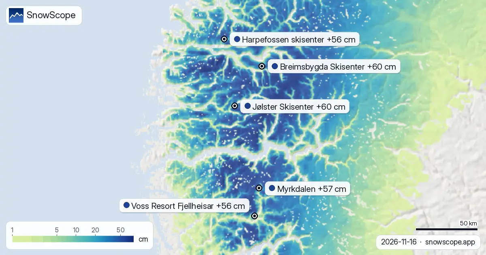
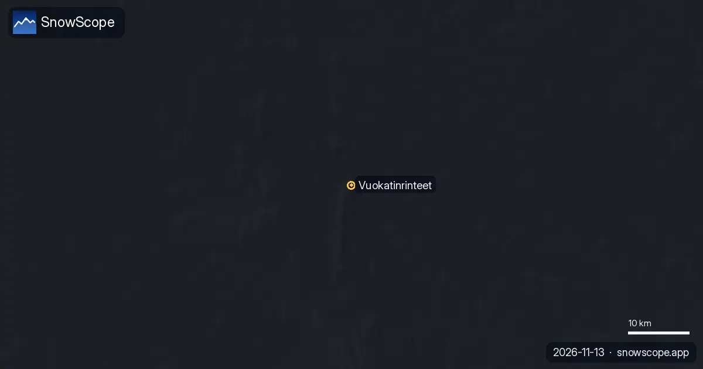

Uutta lunta Pohjoismaissa: Breimsbygda Skisenter 60 cm 72 tunnissa (16. marraskuuta)
Viimeisten 72 tunnin aikana eniten uutta lunta sai Breimsbygda Skisenter: noin 60 cm. Myös Jølster Skisenter (60 cm), Myrkdalen (57 cm) ja Harpefossen skisenter (56 cm) saivat uutta lunta.
Katso kohteen Breimsbygda Skisenter lumiennuste reaaliajassa SnowScope-sovelluksessaLumensyvyys, puuterihälytykset ja 3D-kartta, ilmaiseksi.
Missä lunta on eniten
Jos haluat syvää lunta, paikka on tänään (maanantai) Breimsbygda Skisenter (Norja): ylhäällä noin 50 cm. Seuraavina: Myrkdalen (49 cm) ja Harpefossen skisenter (46 cm).
Uusi lumi muuttuu nopeasti: tuuli pakkaa sen avoimilla rinteillä ja lauha ilma tekee siitä raskasta, joten parhaimmillaan se on yleensä lumisadetta seuraavana aamuna metsässä ja tunturin suojaisella puolella.
| Hiihtokeskus | Lumensyvyys | Uusi lumi, 72 h | Tulossa, seuraavat päivät | Huippu |
|---|---|---|---|---|
| Breimsbygda Skisenter | 50 cm | 60 cm | 1 cm | 845 m |
| Jølster Skisenter | 45 cm | 60 cm | 0 cm | 759 m |
| Myrkdalen | 49 cm | 57 cm | 0 cm | 1 067 m |
| Harpefossen skisenter | 46 cm | 56 cm | 2 cm | 812 m |
| Voss Resort Fjellheisar | 46 cm | 56 cm | 0 cm | 948 m |
Lumiennuste
Seuraava lumi osuu ensin kohteeseen Harpefossen skisenter: noin 2 cm 19. marraskuuta mennessä.
Kärkikeskukset tarkemmin
Breimsbygda Skisenter (Norja): vielä 1 cm tulossa 19. marraskuuta mennessä; huippuasema korkeudella 845 m; huipun lähellä noin 50 cm lunta; päälle hiljattain 60 cm. Myrkdalen, Norja: kolmessa päivässä 57 cm lisää; hissit korkeudelle 1 067 m; huipun lähellä noin 49 cm lunta. Harpefossen skisenter, Norja: ennuste 2 cm 19. marraskuuta mennessä; laskettavaa korkeudelle 812 m; parhaiden laskujen lähtöpaikoilla suunnilleen 46 cm; kolmessa päivässä 56 cm uutta lunta.
Alhaalla, keskellä ja ylhäällä
Korkeus ratkaisee kohteessa Breimsbygda Skisenter: huipulla (845 m) 36 cm, korkeudella 740 m 34 cm ja alhaalla (635 m) 28 cm.
Mitattu maastossa
Hjartasen (251 m) mittasi 16. marraskuuta lunta 20 cm, josta 8 cm uutta vuorokaudessa. Storlien-Storvallen (583 m) mittasi 16. marraskuuta lunta 16 cm, josta 8 cm uutta vuorokaudessa. Tagdalen (415 m) mittasi 16. marraskuuta lunta 25 cm, josta 7 cm uutta vuorokaudessa.
Koko Pohjolassa
Lumi peittää nyt noin 729 380 km² alueesta Pohjoismaat; 332/423 seuraamastamme keskuksesta on valkoisia.
Vinkkejä laskijoille
- Luvut ovat arvioita alueelle; tarkista avoimet hissit keskuksen omasta raportista.
- Kylmä, kuiva lumi on hidasta: pakkasvoide tekee todellisen eron.
- Monet pohjoisen keskukset valaisevat päärinteensä iltapäivisin: tarkista valaistujen rinteiden ajat ennen lähtöä.
- Puurajan yläpuolella tuuli ratkaisee: tuulisina päivinä metsärinteillä on paras lumi ja paras näkyvyys.
Näistä luvuista
Hiihtokeskusten lumensyvyydet ovat syvin lumi keskuksen ylärinteillä SnowScopen lumimallin mukaan (noin 1 km, ajo 16. marraskuuta); ne ovat arvioita alueelle, eivät mittaus yhdessä pisteessä. Asemien arvot ovat mittauksia näytettynä päivänä. Ennusteet voivat muuttua. Lue aina virallinen lumivyöryennuste ennen rinteiden ulkopuolelle lähtöä.
Viittaa tähän raporttiin
Tutkimukseen, opetukseen tai mediaan: luvut ja kaaviot ovat vapaasti käytettävissä CC BY 4.0 -lisenssillä tällä lähdeviitteellä.
SnowScope (2026), Uutta lunta Pohjoismaissa: Breimsbygda Skisenter 60 cm 72 tunnissa (16. marraskuuta), https://snowscope.app/blog/fi/2026/11/scandinavia-breimsbygda-skisenter-fresh-snow-powder-alert-16-november-2026.html, luettu 2026-11-16
SnowScope (Atlas Labs). (2026, November 16). Uutta lunta Pohjoismaissa: Breimsbygda Skisenter 60 cm 72 tunnissa (16. marraskuuta). SnowScope snow reports. https://snowscope.app/blog/fi/2026/11/scandinavia-breimsbygda-skisenter-fresh-snow-powder-alert-16-november-2026.html
BibTeX
@misc{snowscope2026scandinaviabreimsbygdask,
author = {{SnowScope (Atlas Labs)}},
title = {Uutta lunta Pohjoismaissa: Breimsbygda Skisenter 60 cm 72 tunnissa (16. marraskuuta)},
year = {2026},
month = nov,
howpublished = {\url{https://snowscope.app/blog/fi/2026/11/scandinavia-breimsbygda-skisenter-fresh-snow-powder-alert-16-november-2026.html}},
note = {Published 2026-11-16 20:42 UTC; accessed 2026-11-16}
}· CC BY 4.0 · Menetelmät, data ja työkalut →
Breimsbygda Skisenter: lumi ja lämpötila korkeuden mukaan, tämä talvi ja viime talvi (työkalut) →
Seuraa: Breimsbygda Skisenter
Ilmainen: viesti, kun uutta lunta on tulossa, ja ennuste joka aamu.
Lisää lumiraportteja

Vuokatin lumitilanne marraskuun puolivälissä 2026: Sotkamon asemilla mitattiin 13. marraskuuta 0 cm, Kajaanissa 1 cm; tälle viikolle ennustetaan noin 9 cm, osin vetenä; rinteet aiotaan avata 4. joulukuuta. 46 mennyttä talvea.

Vemdalenin lumitilanne marraskuun puolivälissä 2026: laakson sääasemilla mitattiin 13. marraskuuta 6–12 cm kahden lumisen päivän jälkeen, noin 8 cm lisää tällä viikolla, avaussuunnitelmat ja 46 mennyttä talvea.